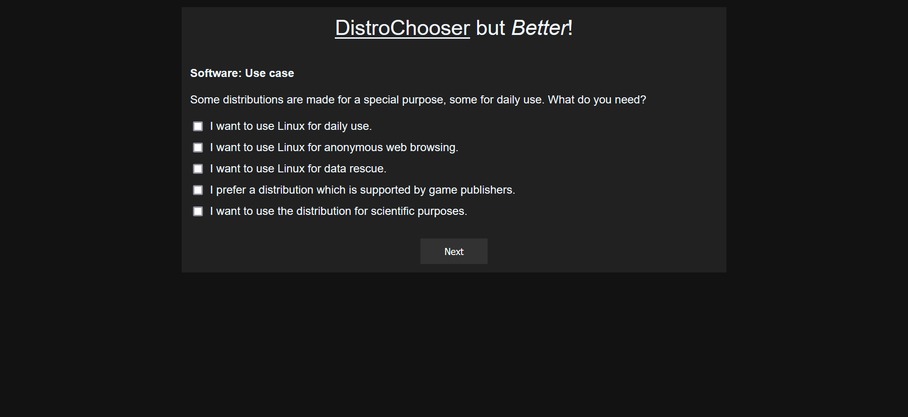
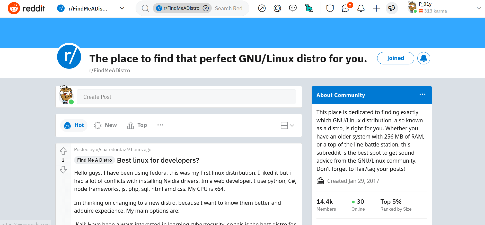
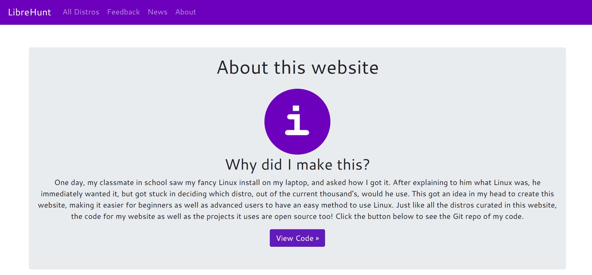
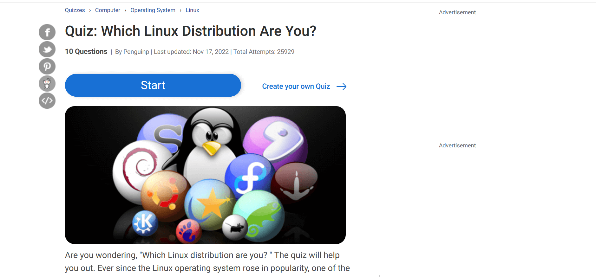

Ideal Linux Distro For Me
Today I wanna share with you some helpful links which will make your choice among huge amount of various linux distros more deliberate.
In this article, I would not like to recommend specific distributions and their description/characteristics. I would like to provide some useful links to help you choose the best distribution for you based on your preferences, experience and knowledge.
Some helpful links:
- Distrochooser - good resource which will help you to decide which Linux is better personally for you in a form of a simple test. Answering the questions about you previous linux experience, your expectations and desired result you will finally got a list on distros which suits you personally.
- Distrochooser but better - another way to choose distro relying on computer (linux) experience and preferences. The differences between this and previous choosers are minimal, from my point of view, but it is also required to be mentioned. 
- Find me a distro - a subreddir where you can ask more experienced users which distro is better for you, ask them about installation and expluatation features. 
- LibreHunt - this link won't help you to choose ideal distro, but it presents all the possible Linux distros with the documentation/websites links which will be helpful for further installation. 
- Which Linux distribution are you? - that is not so serious source, which will identify you as a linux distro, asking questions not even related to linux. I added it here just for fun, but if you would prefer to choose distro relying on this test, you are welcome. 

"Distrochooser" main page
"Distrochooser but better" main page
"Find me a distro" main page
"LibreHunt" about page
"Which Linux distribution are you?" main page
Tip: always read documentation. If it is too booring for you - watch the tutorial on YouTube. The thing is that for some new commers to linux, begginers, some moments, concerning installation/settings can be misunderstood. In my experience, my first linux installation finished with the full hard drive erasing (and I just wanted to make dual boot along with my win10). So, please, read your distro documentation. Every distro has it.